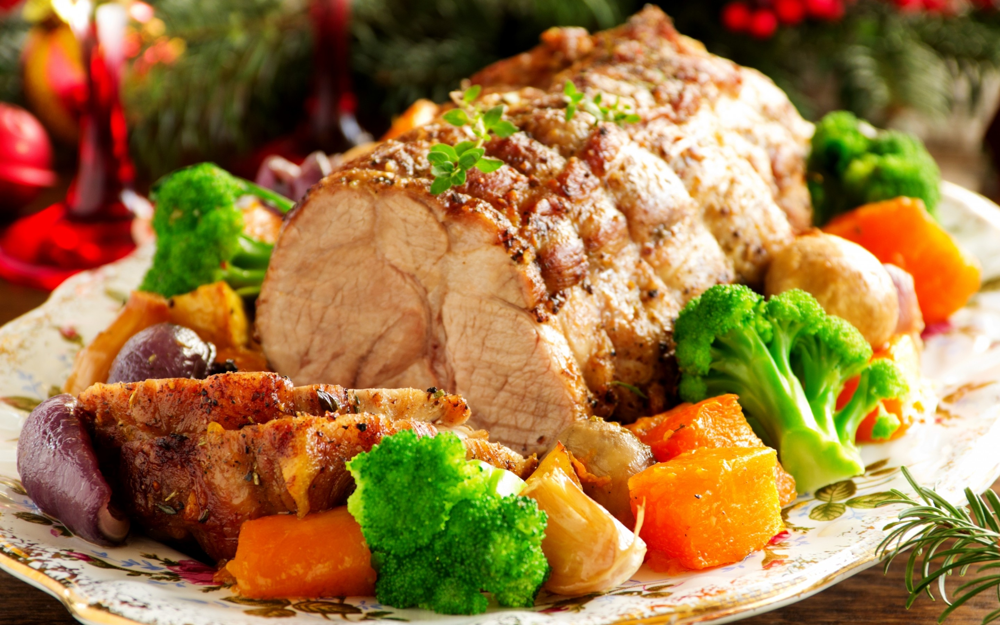
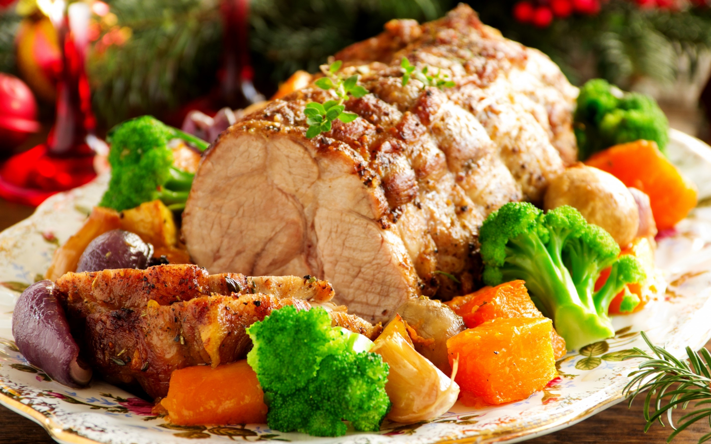

Что приготовить? Над этим вопросом ежедневно задумываются миллионы людей по всему миру. Надеемся, рецепты нашего кулинарного сайта помогут решить этот вопрос Вам сегодня. На этом сайте Вы найдете кулинарные рецепты, праздничные и повседневные, с подробными инструкциями и пошаговыми фотографиями.
Человек живет не тем, что съедает, а тем, что переваривает. Это одинаково справедливо относится как к уму, так и к телу.
© Бенджамин Франклин